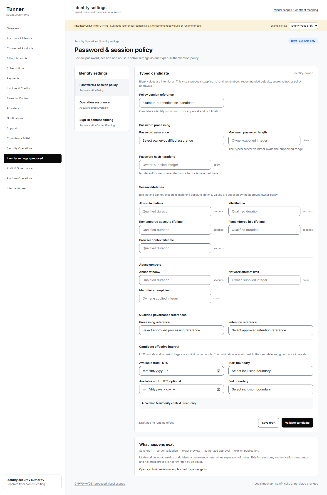
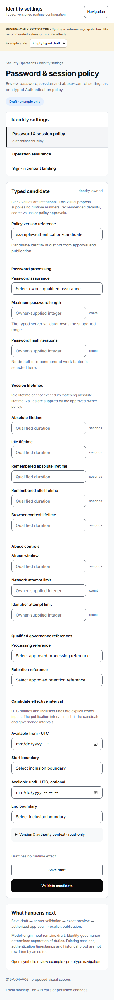
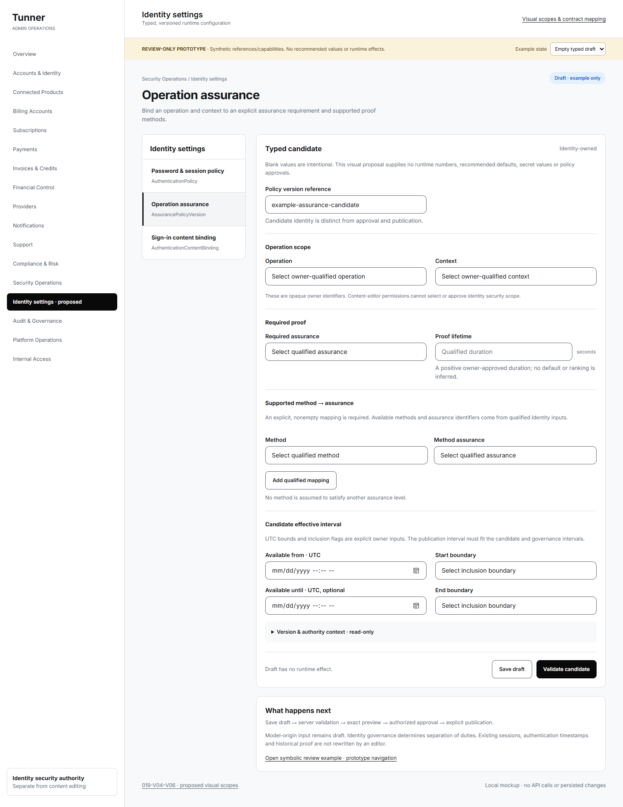
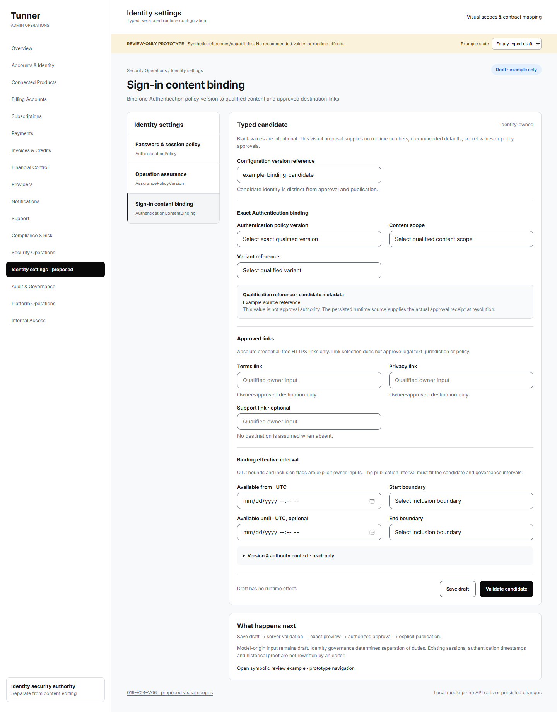
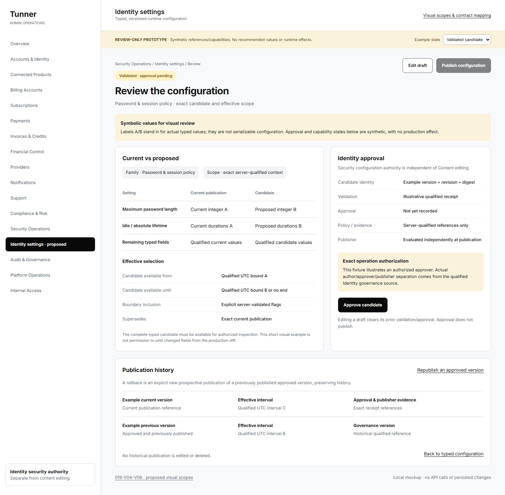
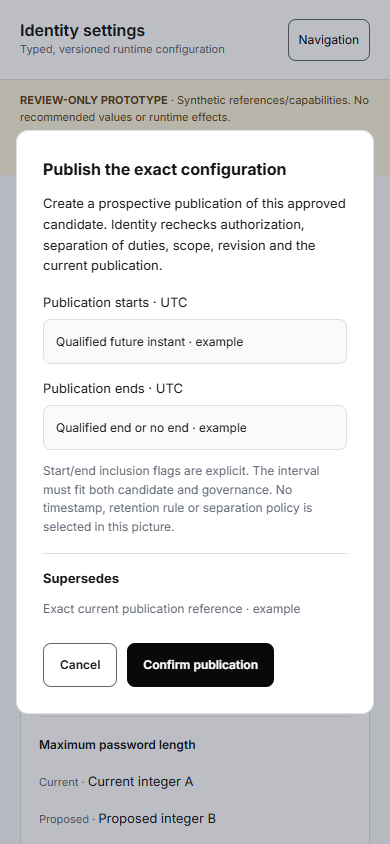

TUN-P2-019 · ADDITIONAL VISUAL PROPOSAL · 2026-11-16
Identity settings with typed review and explicit publication
The earlier content-workspace proposal does not authorize these security-configuration forms. All references, capability states and review labels are synthetic. Numeric fields are deliberately blank; symbolic A/B labels are not serializable policy. This packet recommends no production numbers, permission role strings, retention/legal values, assurance ordering, separation-of-duties policy or destination URLs.
These guided forms reflect the actual three supported families: AuthenticationPolicyVersion, AssurancePolicyVersion and AuthenticationContentBinding. They reuse the approved Admin shell, field/action tokens and version/approval patterns. There is no raw JSON editor, secret-value field or invented reason field.
Exact requested visual scopes
| Scope | Concrete proposed adaptation | Authority boundary |
|---|---|---|
| 019-V04 | A proposed Identity settings entry within Security Operations; three family-specific guided forms with explicit scope, approved-reference selectors, typed scalar/duration/link controls and candidate effective-interval fields. Read-only metadata distinguishes candidate evidence from actual approval. | Only fields present in the current typed contracts. Server controls allowable fields, constraints, scopes, supported methods, references and editability. No Content-editor role grants Identity configuration authority. |
| 019-V05 | Exact current/candidate comparison, validation receipt, separate authorized approval and explicit publication confirmation, effective-time bounds/inclusion, exact superseded publication, immutable history and qualified rollback/republication using a previously published approved version. | Actual lifecycle: Draft → Validate → Approve → Publish. Approval, governance, revision/digest, publication frontier and interval are rechecked. Rollback uses the dedicated Identity operation and preserves history; it does not automatically create a Content draft or delete history. |
| 019-V06 | Responsive reflow of the family forms, complete mobile before/after reading order, shared field/summary errors and focus, loading/unavailable/conflict/no-capability/submitting feedback, and keyboard/dialog focus-return behavior. | Reuse existing Admin control/form/dialog contracts. Later production implementation must qualify backend validation, duplicate/abort/stale-response handling, security, full-screen guarded routing, accessibility and fidelity at each affected scope. This packet supplies no executed implementation PASS. |
Password & session policy · 019-V04 / V06




Operation assurance and content binding · 019-V04




Review, approval, effective publication & history · 019-V05 / V06




Actual contract-to-field mapping
| Family | Supported inputs represented | Limits and authority |
|---|---|---|
| Authentication | Version; processing/retention references; password assurance; maximum password length; hash iterations; absolute/idle and remembered absolute/idle lifetimes; browser-context lifetime; abuse window; network/identifier attempt limits. Metadata includes scope, version identity, interval, supersession and source-evidence references. | Typed server validation remains authoritative, including complete approved inputs, positive durations/counts, supported length range, and matching idle ≤ absolute. Seconds are an explicit UI representation of TimeSpan, not a runtime default. Version metadata must align with the policy version. |
| Assurance | Operation + context; version metadata; required opaque assurance; proof lifetime; nonempty explicit method/assurance dictionary; candidate interval. | No ordering or default method/lifetime is inferred. Allowed identifiers and transitions require qualified owner inputs. The mapping selector does not define a new authentication method. |
| AuthenticationContent | Exact Authentication policy version; configuration-version reference; qualification reference; content scope; variant reference; effective interval; TermsUri; PrivacyUri; optional SupportUri. | Absolute credential-free HTTPS links. Candidate qualification strings are data, not approval authority. The persisted runtime adapter replaces qualification with the real stored approval receipt. The form edits the binding, not content wording or legal meaning. |
| Lifecycle / shared metadata | Proposal reference + expected revision; exact candidate/version/digest; publication interval and inclusion flags; exact superseded publication; prior approved-version reference for rollback; operation/correlation references and actual server actor. | Identity owns authorization, governance and durable effects. SoD flags, retention/processing/classification authority, audit/outbox effect definitions and payload limits are not editable security-policy knobs in this proposal. No free-form reason is requested because the application does not accept or retain one. |
Supplementary states and confirmation
“Validate candidate” demonstrates a summary and first-missing-field focus for intentionally blank examples. Revision/governance/publication conflicts require refresh and re-review; no silent overwrite.
Use the clearly marked example-state selector. No-capability hides the workspace; unavailable/submitting disable actions. Production must independently recheck each exact operation, suppress duplicates and preserve safe draft values.
In the review example, Approve candidate enables Publish configuration. Its confirmation shows server-qualified future bounds, inclusion guidance and exact supersession. Republish opens the same composition for the dedicated rollback operation; no actual publication occurs.
Publication must be prospective, fit candidate/governance bounds, and supersede the exact current publication. Rollback is available only when the exact prior published version and requested future interval remain qualified. The UI cannot assume that any historical approved version is eligible. Runtime publication does not rewrite historical authentication/session facts, upgrade a current session or establish a completed authentication result.
Reference reuse and remaining adaptations
Reuses the high-fidelity read-only Admin references already inspected in the content proposal: 49:3 Layout System, 20:1528 Version Governance, 20:1430 Version History & Diff, 52:984 Approval Request, and 52:1164 Governance Change Review. Their sample financial values, role names and policy choices are not inherited. See the separate content-workspace packet for unmodified reference exports and bounded frame discovery.
New visual adaptations requiring consent are these family-specific grouped controls, security-settings navigation, typed configuration diff/effective-publication review and mobile/feedback states. No exact family-specific forms were established by that bounded reference inspection. No repeat whole-file design audit or new external design was performed.
Source inputs: src/Modules/Identity/IdentityRuntimeConfiguration{Contracts,Application,Model}.cs, AuthenticationContracts.cs, AssurancePolicy.cs, PublishedAuthenticationPresentationSource.cs, PersistedIdentityRuntimeConfigurationSource.cs, and src/Tunner.Platform/Policies/EffectivePolicyVersionResolver.cs. Shared visual source: web/packages/ui plus the prior proposal stylesheet/font. These were inspected at working source based on 7a149ad2; no claim is made that the new backend work was committed or qualified by this proposal.
Proposed pathnames only: /identity/settings/authentication, /identity/settings/assurance, /identity/settings/authentication-content and an opaque candidate review/history path. These are not final public route contracts. The local query parameters select synthetic views only. Production guards/deep links/history/reload and server-originated capability/effect DTOs remain implementation work.
Separate explicit visual consent; approved runtime/governance/security/processing/retention and sensitive publication inputs; qualified Admin authentication/authorization composition; executed real integration, runtime Login/assurance/content-binding and publication/rollback tests; committed source-bound URL/VAL/UX/accessibility evidence. This artifact is visual proposal evidence only, with no backend, live-authentication, security, Product or release acceptance.
2026-11-16 — delegated P2-019 implementation decisions
The Product Owner explicitly authorized the agent to select and implement compatible in-scope P2-019 UI/UX improvements using existing approved patterns, without individual proposal approvals. The original proposal and its approvals above are retained. Source grant: governance/work-items/TUN-P2-019.yaml:delegated_ui_ux_authority. Under that grant, the agent selected the existing two-column typed field group, common metadata/UTC controls and edit/review/history workflow for Session Listing HTTP budgets: two blank owner inputs, no fixed-profile panel, session actions or runtime-enablement switch. This reuses the approved configuration layout because the existing contract exposes only two Int32 transport capacities. Business/security/permission/architecture rules, mandatory independent reviews and Product acceptance remain separate; Figma and Drive stay read-only.